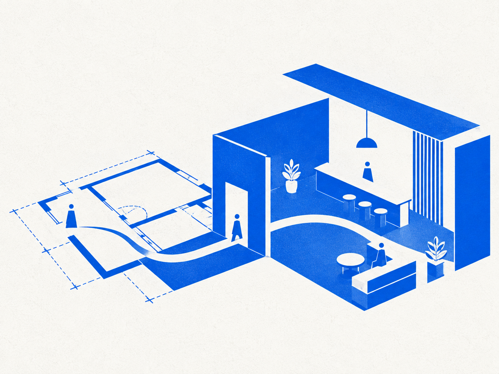
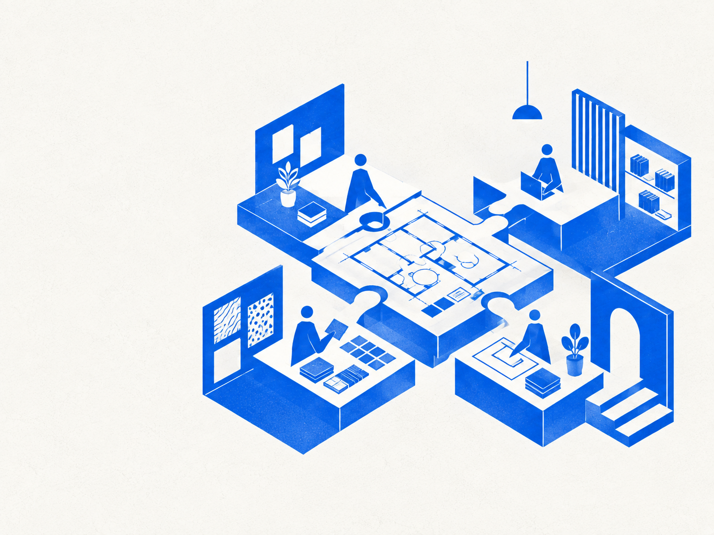

JOBS / DESIGN / 01
空間の体験を、
図面と素材で具体化する。

企画意図を、空間の構成、素材、照明、家具へ展開する役割です。
見た目だけでなく、人の動きや過ごし方、運営のしやすさまで考え、異なる専門性と対話しながら設計を進めます。
EXPERIENCE → DRAWING → BUILT SPACE要件とブランドを読み解き、空間コンセプトと体験の軸を整理する。
ゾーニング、動線、レイアウトを検討し、基本計画へ落とし込む。
素材、色、照明、家具を選定し、意匠と機能のバランスを整える。
施工・PM・協力会社と図面を共有し、完成まで設計意図をつなぐ。

CAFE / TOKYO
CONCEPT → DESIGN → BUILD → OPEN
完成後の写真だけでなく、設計判断とチームの対話をプロジェクト例として伝えます。
各専門性と判断を重ね、ひとつの体験へまとめます。

SPECIALTY + CURIOSITY + COLLABORATION
募集要項は架空案件用のサンプルです。実装時は情報更新日と問い合わせ先を併記します。
Job → Person → Interviewを往復し、仕事内容と働く人の両方から応募を判断できます。
選択中の職種を引き継いで、ENTRYフォームへ進みます。
entry.html?job=interior-designer